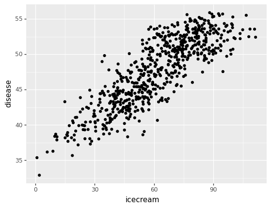
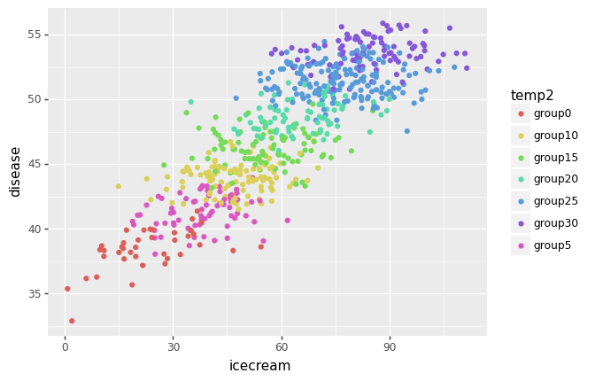
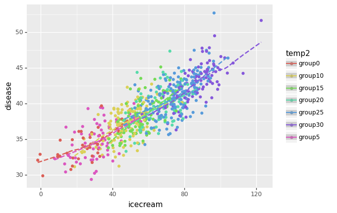
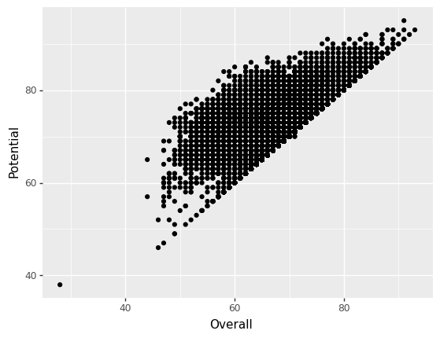
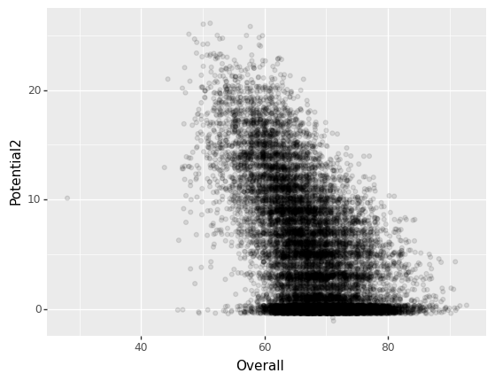
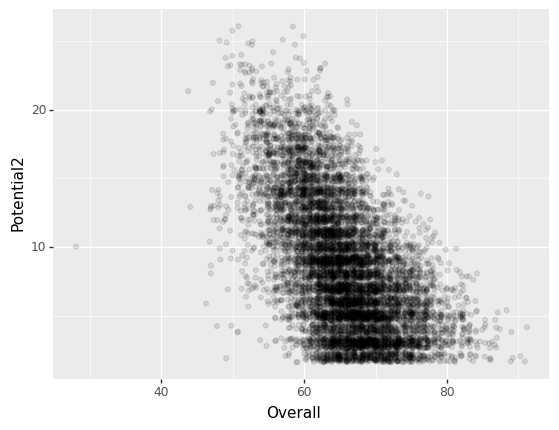
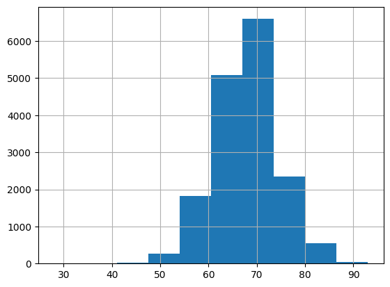
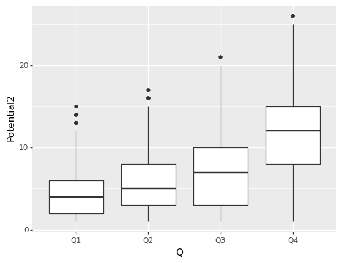
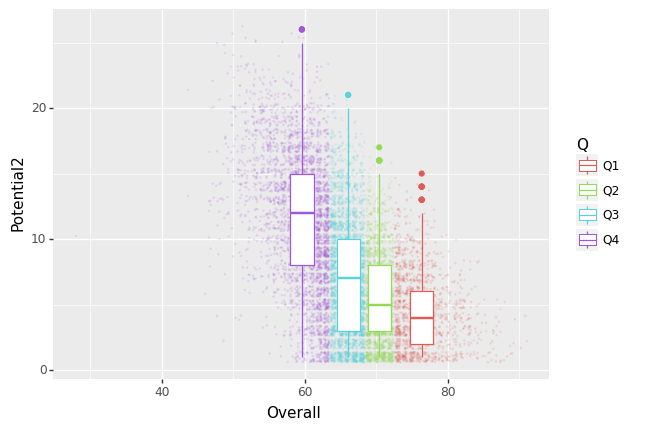

import pandas as pd
from plotnine import *
import numpy as np06. Partial Correlation & Pandas Handling
python
Partial Correlation
- 내가 알고있는 것 * 특정 변수간에 상관계수를 구할 때 제 3의 요인을 통제하여 상관계수를 계산한다.
예제 : 아이스크림과 소아마비
- 여름철에 수영장을 많이가서 소아마비에 빈도가 늘었다.
- 여름철엔 아이스크림을 많이 먹는다.
- “아이스크림과 소아마비는 상관관계가 높을 것이다” 라는 것이 이 문제의 핵심 \(\to\) 사실은 전혀 그렇지 않음
df=pd.read_csv('https://raw.githubusercontent.com/guebin/2021DV/master/_notebooks/extremum.csv')df.columnsIndex(['지점번호', '지점명', '일시', '평균기온(℃)', '최고기온(℃)', '최고기온시각', '최저기온(℃)',
'최저기온시각일교차', 'Unnamed: 8'],
dtype='object')- 전처리 작업
temp = df.iloc[:,3]\[\text{diseas} = \text{temp} \times 0.5 + 40 + ɛ \quad \varepsilon_i \sim N(0,\sigma^2)\]
e1 = np.random.normal(size=len(df),scale=10)
icecream = 30 + temp*2+e1
ϵ2=np.random.normal(size=656,scale=1)
disease=temp*0.5 + 40 +ϵ2
df1 = pd.DataFrame({"temp" : temp, "disease" : disease, "icecream" : icecream})def f(x):
if x<0:
y='group0'
elif x<5:
y='group5'
elif x<10:
y='group10'
elif x<15:
y='group15'
elif x<20:
y='group20'
elif x<25:
y='group25'
else:
y='group30'
return y df1["temp2"] = list(map(lambda x : f(x) ,df1.temp))(
ggplot(df1,aes(x="icecream",y="disease")) +
geom_point()
)
(
ggplot(df1,aes(x="icecream",y="disease")) +
geom_point(aes(color="temp2"))
)
- 온도라는 변수를 통제하니 아이스크림과 소아마비 간에는 연관성이 없어보인다.
만약 관계가 있는 경우라면?
np.random.seed(1)
ϵ1=np.random.normal(size=656, scale=10)
icecream=temp*2 + 30 + ϵ1 np.random.seed(2)
ϵ2=np.random.normal(size=656,scale=1)
disease= 30+ temp*0.0 + icecream*0.15 +ϵ2*2df2=pd.DataFrame({'temp':temp,'icecream':icecream,'disease':disease})
df2['temp2']=list(map(f,df2.temp))import warnings
warnings.filterwarnings('ignore')(
ggplot(df2, aes(x="icecream",y="disease")) +
geom_point(aes(color="temp2")) +
geom_smooth(aes(color="temp2"),linetype="dashed")
)
Pandas 데이터 핸들링
loc
np.random.seed(1)
_df= pd.DataFrame(np.random.normal(size=(20,4)), columns=list('ABCD'), index=pd.date_range('20201225',periods=20))_df.head()| A | B | C | D | |
|---|---|---|---|---|
| 2020-12-25 | 1.624345 | -0.611756 | -0.528172 | -1.072969 |
| 2020-12-26 | 0.865408 | -2.301539 | 1.744812 | -0.761207 |
| 2020-12-27 | 0.319039 | -0.249370 | 1.462108 | -2.060141 |
| 2020-12-28 | -0.322417 | -0.384054 | 1.133769 | -1.099891 |
| 2020-12-29 | -0.172428 | -0.877858 | 0.042214 | 0.582815 |
- 1월 5일부터 1월 8일 까지의 자료만 보고싶다.
_df.loc["20210105":"20210108",:]| A | B | C | D | |
|---|---|---|---|---|
| 2021-01-05 | 0.050808 | -0.636996 | 0.190915 | 2.100255 |
| 2021-01-06 | 0.120159 | 0.617203 | 0.300170 | -0.352250 |
| 2021-01-07 | -1.142518 | -0.349343 | -0.208894 | 0.586623 |
| 2021-01-08 | 0.838983 | 0.931102 | 0.285587 | 0.885141 |
- loc와 lloc는 행과 더 친하고 열과 친하지 않다. 따라서 열을 선택할때는 그렇게 좋은 방법은 아니다.
- 아래의 경우는 인덱스를 2칸씩 띄어서 불러옴
_df.iloc[::2]| A | B | C | D | |
|---|---|---|---|---|
| 2020-12-25 | 1.624345 | -0.611756 | -0.528172 | -1.072969 |
| 2020-12-27 | 0.319039 | -0.249370 | 1.462108 | -2.060141 |
| 2020-12-29 | -0.172428 | -0.877858 | 0.042214 | 0.582815 |
| 2020-12-31 | 0.900856 | -0.683728 | -0.122890 | -0.935769 |
| 2021-01-02 | -0.687173 | -0.845206 | -0.671246 | -0.012665 |
| 2021-01-04 | -0.191836 | -0.887629 | -0.747158 | 1.692455 |
| 2021-01-06 | 0.120159 | 0.617203 | 0.300170 | -0.352250 |
| 2021-01-08 | 0.838983 | 0.931102 | 0.285587 | 0.885141 |
| 2021-01-10 | 0.488518 | -0.075572 | 1.131629 | 1.519817 |
| 2021-01-12 | 0.160037 | 0.876169 | 0.315635 | -2.022201 |
- 컬럼에도 적용 가능하다.
_df.iloc[:,::3]| A | D | |
|---|---|---|
| 2020-12-25 | 1.624345 | -1.072969 |
| 2020-12-26 | 0.865408 | -0.761207 |
| 2020-12-27 | 0.319039 | -2.060141 |
| 2020-12-28 | -0.322417 | -1.099891 |
| 2020-12-29 | -0.172428 | 0.582815 |
| 2020-12-30 | -1.100619 | 0.502494 |
| 2020-12-31 | 0.900856 | -0.935769 |
| 2021-01-01 | -0.267888 | -0.396754 |
| 2021-01-02 | -0.687173 | -0.012665 |
| 2021-01-03 | -1.117310 | 0.742044 |
| 2021-01-04 | -0.191836 | 1.692455 |
| 2021-01-05 | 0.050808 | 2.100255 |
| 2021-01-06 | 0.120159 | -0.352250 |
| 2021-01-07 | -1.142518 | 0.586623 |
| 2021-01-08 | 0.838983 | 0.885141 |
| 2021-01-09 | -0.754398 | -0.298093 |
| 2021-01-10 | 0.488518 | 1.519817 |
| 2021-01-11 | 2.185575 | -0.504466 |
| 2021-01-12 | 0.160037 | -2.022201 |
| 2021-01-13 | -0.306204 | 0.762011 |
- 위 방법은 컬럼에는 자주 사용하지 않는다. 행의 경우 특정 간격으로 뽑는 데이터를 뽑는 일이 빈번함
lambda + map
np.random.seed(1)
df2= pd.DataFrame(np.random.normal(size=(10,4)),columns=list('ABCD'))
df2| A | B | C | D | |
|---|---|---|---|---|
| 0 | 1.624345 | -0.611756 | -0.528172 | -1.072969 |
| 1 | 0.865408 | -2.301539 | 1.744812 | -0.761207 |
| 2 | 0.319039 | -0.249370 | 1.462108 | -2.060141 |
| 3 | -0.322417 | -0.384054 | 1.133769 | -1.099891 |
| 4 | -0.172428 | -0.877858 | 0.042214 | 0.582815 |
| 5 | -1.100619 | 1.144724 | 0.901591 | 0.502494 |
| 6 | 0.900856 | -0.683728 | -0.122890 | -0.935769 |
| 7 | -0.267888 | 0.530355 | -0.691661 | -0.396754 |
| 8 | -0.687173 | -0.845206 | -0.671246 | -0.012665 |
| 9 | -1.117310 | 0.234416 | 1.659802 | 0.742044 |
컬럼 A의 값이 0보다 큰경우만
df2.iloc[map(lambda x : x>0, df2.A),:]| A | B | C | D | |
|---|---|---|---|---|
| 0 | 1.624345 | -0.611756 | -0.528172 | -1.072969 |
| 1 | 0.865408 | -2.301539 | 1.744812 | -0.761207 |
| 2 | 0.319039 | -0.249370 | 1.462108 | -2.060141 |
| 6 | 0.900856 | -0.683728 | -0.122890 | -0.935769 |
df2.loc[map(lambda x : x > 0 , df2.A),: ]| A | B | C | D | |
|---|---|---|---|---|
| 0 | 1.624345 | -0.611756 | -0.528172 | -1.072969 |
| 1 | 0.865408 | -2.301539 | 1.744812 | -0.761207 |
| 2 | 0.319039 | -0.249370 | 1.462108 | -2.060141 |
| 6 | 0.900856 | -0.683728 | -0.122890 | -0.935769 |
컬럼 A와 B가 둘다 0보다 큰경우만
df2.loc[ map(lambda x,y : (x>0) and (y>0) , df2.A,df2.C),:]| A | B | C | D | |
|---|---|---|---|---|
| 1 | 0.865408 | -2.301539 | 1.744812 | -0.761207 |
| 2 | 0.319039 | -0.249370 | 1.462108 | -2.060141 |
df2.loc[ map(lambda x,y : (x>0) | (y>0) , df2.A,df2.C),:]| A | B | C | D | |
|---|---|---|---|---|
| 0 | 1.624345 | -0.611756 | -0.528172 | -1.072969 |
| 1 | 0.865408 | -2.301539 | 1.744812 | -0.761207 |
| 2 | 0.319039 | -0.249370 | 1.462108 | -2.060141 |
| 3 | -0.322417 | -0.384054 | 1.133769 | -1.099891 |
| 4 | -0.172428 | -0.877858 | 0.042214 | 0.582815 |
| 5 | -1.100619 | 1.144724 | 0.901591 | 0.502494 |
| 6 | 0.900856 | -0.683728 | -0.122890 | -0.935769 |
| 9 | -1.117310 | 0.234416 | 1.659802 | 0.742044 |
df2.loc[ map(lambda x,y : (x>0) or (y>0) , df2.A,df2.C),:]| A | B | C | D | |
|---|---|---|---|---|
| 0 | 1.624345 | -0.611756 | -0.528172 | -1.072969 |
| 1 | 0.865408 | -2.301539 | 1.744812 | -0.761207 |
| 2 | 0.319039 | -0.249370 | 1.462108 | -2.060141 |
| 3 | -0.322417 | -0.384054 | 1.133769 | -1.099891 |
| 4 | -0.172428 | -0.877858 | 0.042214 | 0.582815 |
| 5 | -1.100619 | 1.144724 | 0.901591 | 0.502494 |
| 6 | 0.900856 | -0.683728 | -0.122890 | -0.935769 |
| 9 | -1.117310 | 0.234416 | 1.659802 | 0.742044 |
query
A>0 and B<0 인 행을 선택
np.random.seed(1)
df=pd.DataFrame(np.random.normal(size=(15,4)),columns=list('ABCD'))
df| A | B | C | D | |
|---|---|---|---|---|
| 0 | 1.624345 | -0.611756 | -0.528172 | -1.072969 |
| 1 | 0.865408 | -2.301539 | 1.744812 | -0.761207 |
| 2 | 0.319039 | -0.249370 | 1.462108 | -2.060141 |
| 3 | -0.322417 | -0.384054 | 1.133769 | -1.099891 |
| 4 | -0.172428 | -0.877858 | 0.042214 | 0.582815 |
| 5 | -1.100619 | 1.144724 | 0.901591 | 0.502494 |
| 6 | 0.900856 | -0.683728 | -0.122890 | -0.935769 |
| 7 | -0.267888 | 0.530355 | -0.691661 | -0.396754 |
| 8 | -0.687173 | -0.845206 | -0.671246 | -0.012665 |
| 9 | -1.117310 | 0.234416 | 1.659802 | 0.742044 |
| 10 | -0.191836 | -0.887629 | -0.747158 | 1.692455 |
| 11 | 0.050808 | -0.636996 | 0.190915 | 2.100255 |
| 12 | 0.120159 | 0.617203 | 0.300170 | -0.352250 |
| 13 | -1.142518 | -0.349343 | -0.208894 | 0.586623 |
| 14 | 0.838983 | 0.931102 | 0.285587 | 0.885141 |
df.query('A>0 and B<0')| A | B | C | D | |
|---|---|---|---|---|
| 0 | 1.624345 | -0.611756 | -0.528172 | -1.072969 |
| 1 | 0.865408 | -2.301539 | 1.744812 | -0.761207 |
| 2 | 0.319039 | -0.249370 | 1.462108 | -2.060141 |
| 6 | 0.900856 | -0.683728 | -0.122890 | -0.935769 |
| 11 | 0.050808 | -0.636996 | 0.190915 | 2.100255 |
df.query('A>0 & B<0')| A | B | C | D | |
|---|---|---|---|---|
| 0 | 1.624345 | -0.611756 | -0.528172 | -1.072969 |
| 1 | 0.865408 | -2.301539 | 1.744812 | -0.761207 |
| 2 | 0.319039 | -0.249370 | 1.462108 | -2.060141 |
| 6 | 0.900856 | -0.683728 | -0.122890 | -0.935769 |
| 11 | 0.050808 | -0.636996 | 0.190915 | 2.100255 |
A < B< C인 행을선택
df.query('A<B<C')| A | B | C | D | |
|---|---|---|---|---|
| 9 | -1.117310 | 0.234416 | 1.659802 | 0.742044 |
| 13 | -1.142518 | -0.349343 | -0.208894 | 0.586623 |
A>mean(A)인 행을 선택
meanA =np.mean(df.A)
meanA-0.018839420539994597df.query("A>@meanA")| A | B | C | D | |
|---|---|---|---|---|
| 0 | 1.624345 | -0.611756 | -0.528172 | -1.072969 |
| 1 | 0.865408 | -2.301539 | 1.744812 | -0.761207 |
| 2 | 0.319039 | -0.249370 | 1.462108 | -2.060141 |
| 6 | 0.900856 | -0.683728 | -0.122890 | -0.935769 |
| 11 | 0.050808 | -0.636996 | 0.190915 | 2.100255 |
| 12 | 0.120159 | 0.617203 | 0.300170 | -0.352250 |
| 14 | 0.838983 | 0.931102 | 0.285587 | 0.885141 |
A > mean(A)이고, A<0.8 인 것을 선택
df.query("A> @meanA and A<0.8")| A | B | C | D | |
|---|---|---|---|---|
| 2 | 0.319039 | -0.249370 | 1.462108 | -2.060141 |
| 11 | 0.050808 | -0.636996 | 0.190915 | 2.100255 |
| 12 | 0.120159 | 0.617203 | 0.300170 | -0.352250 |
단순인덱싱
- 0,3:5, 9:11 에 해당하는 row를 뽑고 싶다 \(\to\) 칼럼이름을 index로 받아서 사용한다.
df.query("index==0 or 3<=index<=5 or 9<=index<=11")| A | B | C | D | |
|---|---|---|---|---|
| 0 | 1.624345 | -0.611756 | -0.528172 | -1.072969 |
| 3 | -0.322417 | -0.384054 | 1.133769 | -1.099891 |
| 4 | -0.172428 | -0.877858 | 0.042214 | 0.582815 |
| 5 | -1.100619 | 1.144724 | 0.901591 | 0.502494 |
| 9 | -1.117310 | 0.234416 | 1.659802 | 0.742044 |
| 10 | -0.191836 | -0.887629 | -0.747158 | 1.692455 |
| 11 | 0.050808 | -0.636996 | 0.190915 | 2.100255 |
- 아래와 같은 시계열 자료에서 특히 유용함.
df2=pd.DataFrame(np.random.normal(size=(10,4)), columns=list('ABCD'), index=pd.date_range('20201226',periods=10))
df2| A | B | C | D | |
|---|---|---|---|---|
| 2020-12-26 | -0.754398 | 1.252868 | 0.512930 | -0.298093 |
| 2020-12-27 | 0.488518 | -0.075572 | 1.131629 | 1.519817 |
| 2020-12-28 | 2.185575 | -1.396496 | -1.444114 | -0.504466 |
| 2020-12-29 | 0.160037 | 0.876169 | 0.315635 | -2.022201 |
| 2020-12-30 | -0.306204 | 0.827975 | 0.230095 | 0.762011 |
| 2020-12-31 | -0.222328 | -0.200758 | 0.186561 | 0.410052 |
| 2021-01-01 | 0.198300 | 0.119009 | -0.670662 | 0.377564 |
| 2021-01-02 | 0.121821 | 1.129484 | 1.198918 | 0.185156 |
| 2021-01-03 | -0.375285 | -0.638730 | 0.423494 | 0.077340 |
| 2021-01-04 | -0.343854 | 0.043597 | -0.620001 | 0.698032 |
df2.query("20201226 <=index <=20210101")| A | B | C | D | |
|---|---|---|---|---|
| 2020-12-26 | -0.754398 | 1.252868 | 0.512930 | -0.298093 |
| 2020-12-27 | 0.488518 | -0.075572 | 1.131629 | 1.519817 |
| 2020-12-28 | 2.185575 | -1.396496 | -1.444114 | -0.504466 |
| 2020-12-29 | 0.160037 | 0.876169 | 0.315635 | -2.022201 |
| 2020-12-30 | -0.306204 | 0.827975 | 0.230095 | 0.762011 |
| 2020-12-31 | -0.222328 | -0.200758 | 0.186561 | 0.410052 |
| 2021-01-01 | 0.198300 | 0.119009 | -0.670662 | 0.377564 |
df2.query("20201226 <=index <=20210101 and A+B < C")| A | B | C | D | |
|---|---|---|---|---|
| 2020-12-26 | -0.754398 | 1.252868 | 0.512930 | -0.298093 |
| 2020-12-27 | 0.488518 | -0.075572 | 1.131629 | 1.519817 |
| 2020-12-31 | -0.222328 | -0.200758 | 0.186561 | 0.410052 |
FIFA 선수들 시각화
fifa22=pd.read_csv('https://raw.githubusercontent.com/guebin/2021DV/master/_notebooks/2021-10-25-FIFA22_official_data.csv')from plotnine import *(
ggplot(fifa22) +
geom_point(aes(x="Overall",y="Potential"))
)
- 뭔가 : Potential > Overall 인 관계가 성립하는 것 같음 \(\to\) Potential-Overall인 변수를 새로만들고 시각화해보자.
fifa22["Potential2"] = fifa22["Potential"] - fifa22["Overall"](
ggplot(fifa22) +
geom_point(aes(x="Overall",y="Potential2"),alpha=0.1,position="jitter") ## iitter 값들이 겹치지않도록 조금씩 흔들어줌
)
- 포텐셜2가 너무 0근처인 선수들이 있다. 아마 은퇴한 선수들이 아닐까라는 생각이 든다 -> 제외하고 그려보자
(
ggplot(fifa22.query("Potential2>1")) +
geom_point(aes(x="Overall",y="Potential2"),alpha=0.1,position="jitter")
)
- 해석 : 음의 상관관계가 있다.
- Overall이 클수록 포텐셜 2의 분산이 작아진다.(alpha와 jitter 값을 조정하였을때 확실히 밀집도가 커졌음)
- Overall을 구간별로 나누자. 어느 정도가 적당한 구간인가?
import matplotlib.pyplot as plt
%matplotlib inlinefifa22.Overall.hist()
def f(x):
if x>72: y='Q1'
elif x>68: y='Q2'
elif x>63: y='Q3'
else: y='Q4'
return y fifa22["Q"] = list(map(lambda x : f(x),fifa22.Overall))(
ggplot(fifa22.query("Potential2 > 0.1")) +
geom_boxplot(aes(x="Q",y="Potential2"))
)
- Q1으로 갈수록 분산이 작아짐
- 산점도와 박스플랏을 겹처서 그린다면 좀더 이해가 쉬울 것 같다.
- x축의 위치를 조정하면 될 것 같다 \(\to\) Q1~Q4 각 그룹별로 x축의 위치를 구하자
l=fifa22.groupby(by='Q').mean().Overall.to_list()
l[76.3506528835691, 70.4117807472048, 66.07444942506334, 59.60269121813031]def g(x):
if x=='Q1': y=l[0]
elif x=='Q2': y=l[1]
elif x=='Q3': y=l[2]
else: y=l[3]
return yfifa22['Qx']=list(map(g,fifa22.Q))(
ggplot(fifa22.query("Potential2>0.1")) +
geom_point(aes(x="Overall",y="Potential2",color="Q"),alpha=0.1,size=0.1,position="jitter") +
geom_boxplot(aes(x="Qx",y="Potential2",color="Q"))
)s